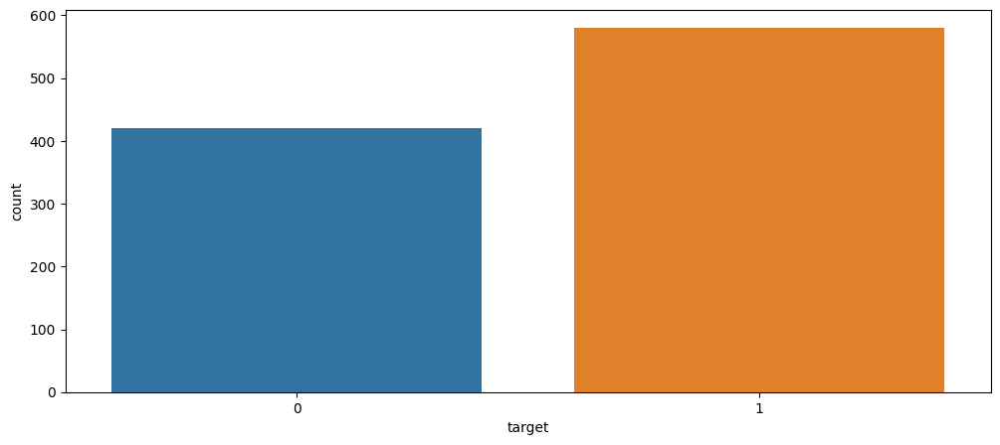
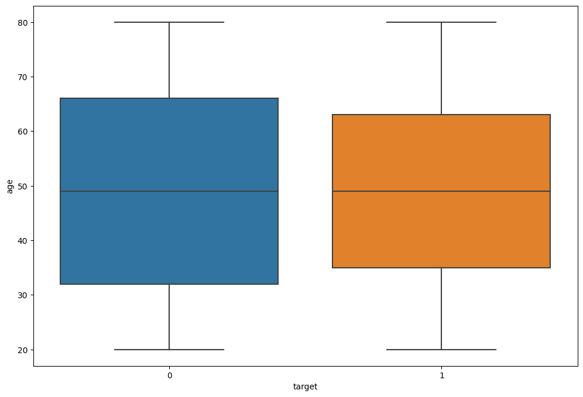
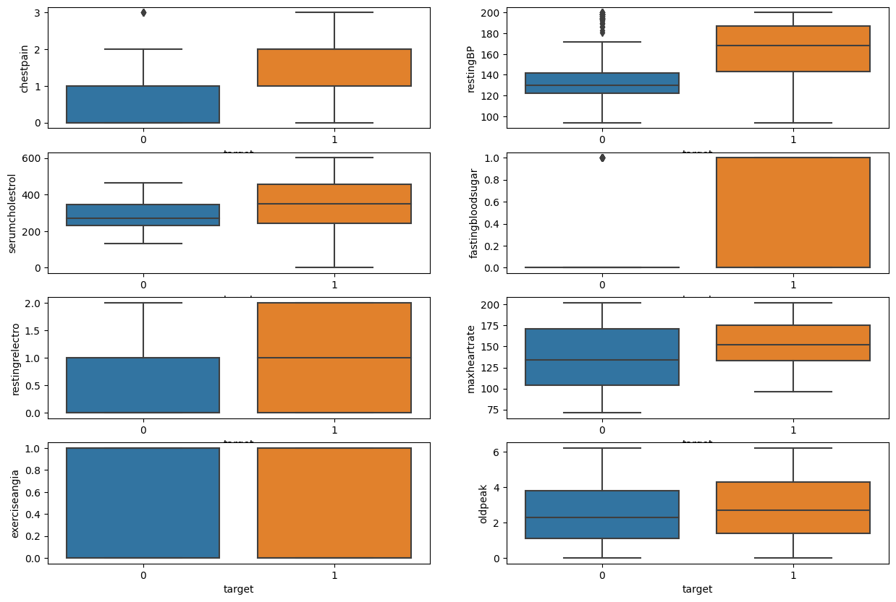
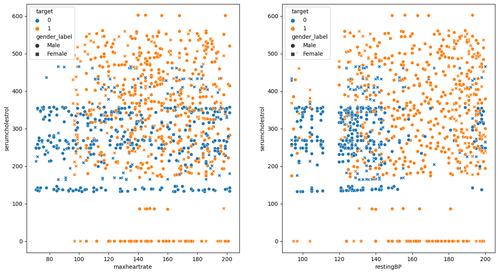
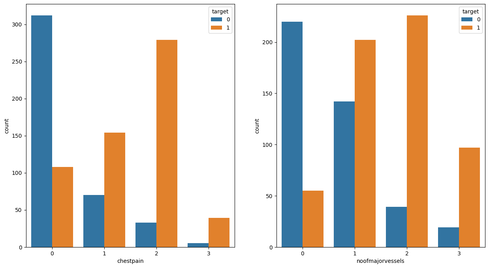
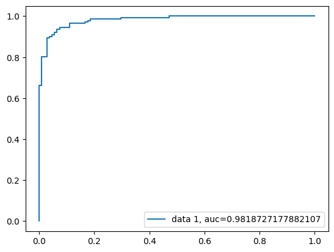
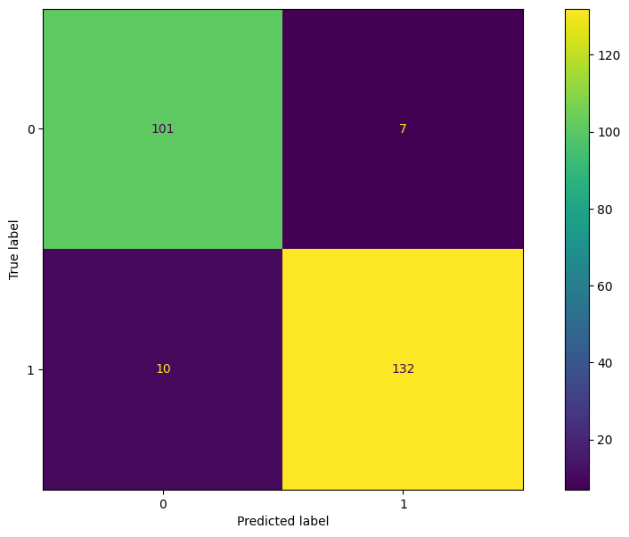

| patientid | age | gender | chestpain | restingBP | serumcholestrol | fastingbloodsugar | restingrelectro | maxheartrate | exerciseangia | oldpeak | slope | noofmajorvessels | target | |
|---|---|---|---|---|---|---|---|---|---|---|---|---|---|---|
| 0 | 103368 | 53 | 1 | 2 | 171 | 0 | 0 | 1 | 147 | 0 | 5.3 | 3 | 3 | 1 |
| 1 | 119250 | 40 | 1 | 0 | 94 | 229 | 0 | 1 | 115 | 0 | 3.7 | 1 | 1 | 0 |
| 2 | 119372 | 49 | 1 | 2 | 133 | 142 | 0 | 0 | 202 | 1 | 5.0 | 1 | 0 | 0 |
| 3 | 132514 | 43 | 1 | 0 | 138 | 295 | 1 | 1 | 153 | 0 | 3.2 | 2 | 2 | 1 |
| 4 | 146211 | 31 | 1 | 1 | 199 | 0 | 0 | 2 | 136 | 0 | 5.3 | 3 | 2 | 1 |
Abstract
Data can be found here
patientid 0
age 0
gender 0
chestpain 0
restingBP 0
serumcholestrol 0
fastingbloodsugar 0
restingrelectro 0
maxheartrate 0
exerciseangia 0
oldpeak 0
slope 0
noofmajorvessels 0
target 0
dtype: int64patientid int64
age int64
gender int64
chestpain int64
restingBP int64
serumcholestrol int64
fastingbloodsugar int64
restingrelectro int64
maxheartrate int64
exerciseangia int64
oldpeak float64
slope int64
noofmajorvessels int64
target int64
dtype: objectExploratory Data Analysis
| patientid | age | gender | chestpain | restingBP | serumcholestrol | fastingbloodsugar | restingrelectro | maxheartrate | exerciseangia | oldpeak | slope | noofmajorvessels | target | |
|---|---|---|---|---|---|---|---|---|---|---|---|---|---|---|
| count | 1.000000e+03 | 1000.00000 | 1000.000000 | 1000.000000 | 1000.000000 | 1000.000000 | 1000.000000 | 1000.000000 | 1000.000000 | 1000.000000 | 1000.000000 | 1000.000000 | 1000.000000 | 1000.000000 |
| mean | 5.048704e+06 | 49.24200 | 0.765000 | 0.980000 | 151.747000 | 311.447000 | 0.296000 | 0.748000 | 145.477000 | 0.498000 | 2.707700 | 1.540000 | 1.222000 | 0.580000 |
| std | 2.895905e+06 | 17.86473 | 0.424211 | 0.953157 | 29.965228 | 132.443801 | 0.456719 | 0.770123 | 34.190268 | 0.500246 | 1.720753 | 1.003697 | 0.977585 | 0.493805 |
| min | 1.033680e+05 | 20.00000 | 0.000000 | 0.000000 | 94.000000 | 0.000000 | 0.000000 | 0.000000 | 71.000000 | 0.000000 | 0.000000 | 0.000000 | 0.000000 | 0.000000 |
| 25% | 2.536440e+06 | 34.00000 | 1.000000 | 0.000000 | 129.000000 | 235.750000 | 0.000000 | 0.000000 | 119.750000 | 0.000000 | 1.300000 | 1.000000 | 0.000000 | 0.000000 |
| 50% | 4.952508e+06 | 49.00000 | 1.000000 | 1.000000 | 147.000000 | 318.000000 | 0.000000 | 1.000000 | 146.000000 | 0.000000 | 2.400000 | 2.000000 | 1.000000 | 1.000000 |
| 75% | 7.681877e+06 | 64.25000 | 1.000000 | 2.000000 | 181.000000 | 404.250000 | 1.000000 | 1.000000 | 175.000000 | 1.000000 | 4.100000 | 2.000000 | 2.000000 | 1.000000 |
| max | 9.990855e+06 | 80.00000 | 1.000000 | 3.000000 | 200.000000 | 602.000000 | 1.000000 | 2.000000 | 202.000000 | 1.000000 | 6.200000 | 3.000000 | 3.000000 | 1.000000 |
(1000, 14)




| age | gender | chestpain | restingBP | serumcholestrol | fastingbloodsugar | restingrelectro | maxheartrate | exerciseangia | oldpeak | slope | noofmajorvessels | |
|---|---|---|---|---|---|---|---|---|---|---|---|---|
| age | 1.000000 | -0.024717 | 0.037731 | -0.016126 | 0.035439 | 0.049732 | 0.067736 | -0.040092 | -0.037581 | -0.026020 | -0.015334 | 0.025407 |
| gender | -0.024717 | 1.000000 | 0.035402 | -0.069727 | -0.120759 | 0.023560 | -0.046634 | 0.064606 | -0.051746 | 0.331457 | -0.051957 | 0.029376 |
| chestpain | 0.037731 | 0.035402 | 1.000000 | 0.222267 | 0.174731 | 0.232059 | 0.256316 | 0.114496 | -0.027376 | 0.101345 | 0.472731 | 0.285156 |
| restingBP | -0.016126 | -0.069727 | 0.222267 | 1.000000 | 0.126523 | 0.192063 | 0.219887 | 0.095569 | -0.046545 | -0.004225 | 0.376711 | 0.263194 |
| serumcholestrol | 0.035439 | -0.120759 | 0.174731 | 0.126523 | 1.000000 | 0.278337 | 0.101767 | 0.038967 | 0.029422 | -0.025910 | 0.165569 | 0.132419 |
| fastingbloodsugar | 0.049732 | 0.023560 | 0.232059 | 0.192063 | 0.278337 | 1.000000 | 0.143982 | 0.096528 | 0.011356 | 0.015311 | 0.242734 | 0.182246 |
| restingrelectro | 0.067736 | -0.046634 | 0.256316 | 0.219887 | 0.101767 | 0.143982 | 1.000000 | 0.099991 | -0.032489 | 0.040291 | 0.343280 | 0.204684 |
| maxheartrate | -0.040092 | 0.064606 | 0.114496 | 0.095569 | 0.038967 | 0.096528 | 0.099991 | 1.000000 | 0.015536 | 0.044614 | 0.201515 | 0.122763 |
| exerciseangia | -0.037581 | -0.051746 | -0.027376 | -0.046545 | 0.029422 | 0.011356 | -0.032489 | 0.015536 | 1.000000 | -0.003296 | -0.017783 | -0.017513 |
| oldpeak | -0.026020 | 0.331457 | 0.101345 | -0.004225 | -0.025910 | 0.015311 | 0.040291 | 0.044614 | -0.003296 | 1.000000 | 0.208789 | 0.086992 |
| slope | -0.015334 | -0.051957 | 0.472731 | 0.376711 | 0.165569 | 0.242734 | 0.343280 | 0.201515 | -0.017783 | 0.208789 | 1.000000 | 0.526536 |
| noofmajorvessels | 0.025407 | 0.029376 | 0.285156 | 0.263194 | 0.132419 | 0.182246 | 0.204684 | 0.122763 | -0.017513 | 0.086992 | 0.526536 | 1.000000 |
Model Creation
Generalized Linear Model Regression Results
==============================================================================
Dep. Variable: target No. Observations: 750
Model: GLM Df Residuals: 738
Model Family: Binomial Df Model: 11
Link Function: Logit Scale: 1.0000
Method: IRLS Log-Likelihood: -115.01
Date: Mon, 11 Dec 2023 Deviance: 230.03
Time: 20:20:23 Pearson chi2: 362.
No. Iterations: 8 Pseudo R-squ. (CS): 0.6505
Covariance Type: nonrobust
=====================================================================================
coef std err z P>|z| [0.025 0.975]
-------------------------------------------------------------------------------------
age -0.0341 0.009 -3.650 0.000 -0.052 -0.016
gender 0.9944 0.419 2.375 0.018 0.174 1.815
chestpain 1.3521 0.225 6.017 0.000 0.912 1.793
restingBP -0.0197 0.006 -3.503 0.000 -0.031 -0.009
serumcholestrol -0.0027 0.001 -1.960 0.050 -0.005 -4.33e-07
fastingbloodsugar 0.9807 0.411 2.384 0.017 0.174 1.787
restingrelectro 1.0904 0.257 4.238 0.000 0.586 1.595
maxheartrate -0.0161 0.005 -3.429 0.001 -0.025 -0.007
exerciseangia -0.7035 0.352 -2.000 0.046 -1.393 -0.014
oldpeak -0.9641 0.152 -6.335 0.000 -1.262 -0.666
slope 5.9580 0.627 9.496 0.000 4.728 7.188
noofmajorvessels 0.2087 0.193 1.080 0.280 -0.170 0.587
=====================================================================================age 0.491479
gender 0.729955
chestpain 0.794481
restingBP 0.495078
serumcholestrol 0.499325
fastingbloodsugar 0.727242
restingrelectro 0.748466
maxheartrate 0.495965
exerciseangia 0.331043
oldpeak 0.276065
slope 0.997422
noofmajorvessels 0.551982
dtype: float64Verify Model Assumptions
### TODOModel Assessment

0.6309263284100989
Accuracy: 0.932
Sensitivity: 0.9296
Specificity: 0.9352
PPV: 0.9496
NPV: 0.9099